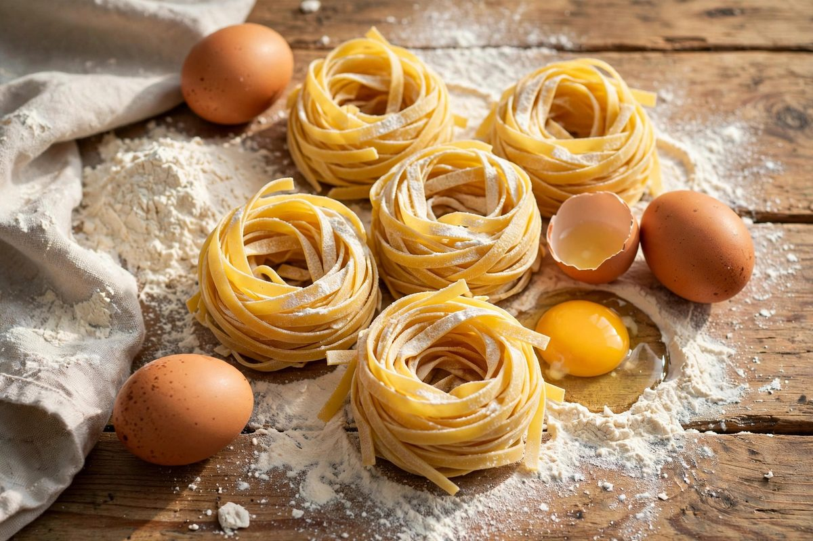

Home › Guides
The Pasta Guide: Shapes, Cooking and Sauces

Pasta looks simple, and that is exactly why it is easy to get wrong. The difference between a good plate of pasta and a great one is rarely the recipe. It is the water, the timing, the shape and the way the sauce meets the pasta in the pan. Get those four things right and almost any pasta dish improves.
Choosing the right shape
There are hundreds of pasta shapes, and they exist for a reason. Long, thin shapes such as spaghetti and linguine suit light, oily or smooth sauces that coat rather than cling. Short tubes such as penne and rigatoni hold chunky sauces inside their hollows. Flat, wide shapes such as tagliatelle and pappardelle are made for rich ragus that need surface area.
Small shapes such as orzo and ditalini belong in soups. Shells and farfalle catch pieces of vegetables and cheese in their folds. As a rule, match the sauce to the shape: heavy sauce, sturdy shape; light sauce, delicate shape. When in doubt, the shape the recipe names is usually the right one.
Salting the water and cooking
Use a large pot and plenty of water, about one litre per 100 grams of pasta. Bring it to a rolling boil before adding the pasta, then salt it generously, about one teaspoon of coarse salt per litre. The water should taste like the sea. This is your only chance to season the pasta itself.
Stir the pasta in the first minute so it does not stick, then stir occasionally. Start tasting two minutes before the time on the packet. Pasta is done when it is al dente, tender with a slight bite in the centre. Drain it, but keep a cup of the starchy cooking water. That water is liquid gold for finishing the sauce.
Never rinse, and never add oil
Do not rinse cooked pasta. Rinsing washes away the surface starch that helps sauce cling, and it cools the pasta. The only time to rinse is for a cold pasta salad. Do not add oil to the cooking water either; it does nothing useful and makes sauce slide off.
Instead of draining pasta into a colander and leaving it there, move it straight into the pan with the sauce while it is still hot and steaming. Add a splash of the cooking water and toss for a minute. The starch thickens the sauce and binds it to the pasta. This final step is called mantecatura, and it is what makes restaurant pasta taste different.
Matching sauce to shape
A slow-cooked beef ragu needs tagliatelle or pappardelle, whose wide ribbons carry the meat. A tomato sauce with chunks of vegetable suits penne or rigatoni. Aglio e olio, garlic and oil, is made for spaghetti. Pesto clings best to trofie or fusilli, whose twists trap the sauce.
Seafood sauces work well with linguine or spaghetti. Creamy sauces suit short shapes that hold them. Baked pasta such as lasagne needs flat sheets and a sauce thick enough to stay in layers. These are traditions, not laws, but they exist because they work.
Storing and reheating
Fresh pasta cooks in two to four minutes and should be eaten at once. Dried pasta keeps for months in a sealed container in a cool, dry cupboard. Cooked pasta keeps in the fridge for two to three days in a sealed container with a little oil to stop sticking.
To reheat, warm the pasta gently in a pan with a splash of water or sauce rather than microwaving it dry. Pasta continues to absorb liquid as it sits, so leftover pasta is often softer than fresh. That is normal, and a little extra sauce fixes it.
Frequently Asked Questions
How much pasta per person?
About 80 to 100 g of dry pasta per person for a main course, or 60 to 70 g as a first course. Use our pasta serving calculator above for exact amounts.
Should I break spaghetti in half?
No. Long pasta is meant to be twirled. Use a big enough pot so it fits, and stir until it bends into the water.
Why save pasta cooking water?
It is starchy and salty, so a splash helps sauce cling to the pasta and thickens thin sauces without adding cream.